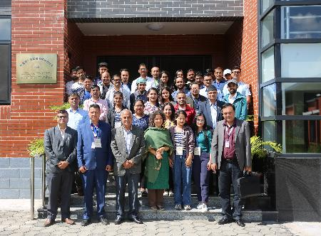

13 October 2022, Kathmandu Center for Research and Education (KCRE) Chinese Academy of Sciences-
Tribhuvan University in collaboration with Central Department of Hydrology and Meteorology (CDHM), Tribhuvan
University (TU) and Institute of Research for Development, France (IRD-France) organized 25-days long
winter school on Snow and Glacier kick off at Kathmandu.
Winter School aims to
introduce participants to the topic of glaciers and available field and remote sensing techniques to monitor
them, applying combined laboratory and field methodologies that rely on hands-on experiential learning. The
program focuses on establishing and sharing training materials to participants allowing development of
hands-on skills in use of remote sensing and GIS for glacial monitoring. Some motivated participants will
get an opportunity to participate in field-based training in the Everest region (Changri-Nup and Pokalde
Glacier). During the field campaign, participants will be trained on field-based skills required for glacial
monitoring. Winter School 2022 on “Application of Field and Remote Sensing
Techniques for Snow and Glacier Studies. In 25 days long extensive winter school, laboratory and theoretical
classes is being conducting at KCRE conference hall from 13th23 October 2022 and the field expedition
will be conducting at Changri nup glacier at Khumbu of Mt Everest from 12 November to 3rd December
2022.
During the
inauguration ceremony Prof Shiva Lal Bhusal, the Rector of Tribhuvan University as a Chief Guest of the
program thanks KCRE and others for organizing such an important event and committed for the necessary
support on the behalf of Tribhuvan University. He also acknowledged the important of Glacier and requested
to save the mountain in order to preserve the nation identity. Similarly, Prof Binil Aryal, Dean of
Institute of Science and Technology, as a special guest of the program highlighted the key aspect of
mountain science and encourage participant actively engage in capacity building trainings.
Prof Deepak Aryal, Head of Central Department of Hydrology and Meteorology (CDHM), Tribhuvan
University as a chair highlighted the important of international collaboration and expressed his commitment
to provide new opportunities for students Glaciers are the most visible indicator of climate change. During
the opening ceremony Dr. Binod Dawadi, the Deputy Director of KCRE welcome the participants and Dr Dibas
Shrestha, assistant professor at CDHM highlighted the program. There are 27 participants representing
various academic, government and research organizations from Nepal.

Group Photo